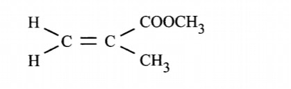
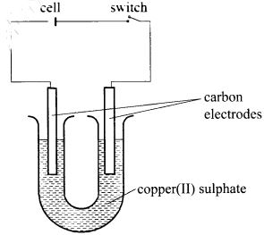
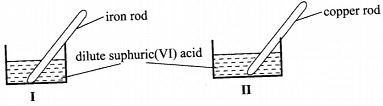
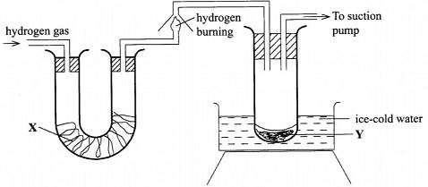
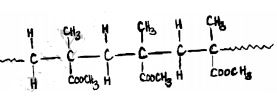
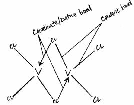
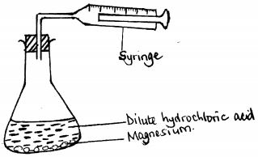
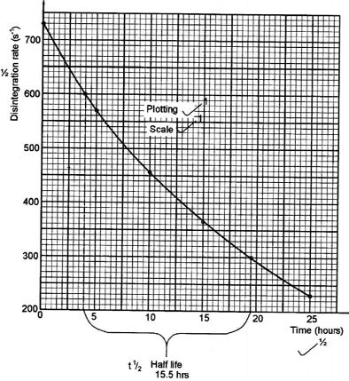

1. (a) Name the homologous series represented by each of the following general formulae.
(i) CnH2n-2 (1 mark)
(ii) CnH2n (1 mark)
(b) Compound G is a triester.
(i) Give the physical state of compound G at room temperature. (1 mark)
(ii) G is completely hydrolysed by heating with aqueous sodium hydroxide.
I Give the structural formula of the alcohol formed. (1 mark)
II Write a formula for the sodium salt formed. ( I mark)
III State the use of the sodium salt. (1 mark)
(c) Ethyne is the first member of the alkyne family.
(i) Name two reagents that can be used in the laboratory to prepare the gas. (1 mark)
(ii) Write an equation for the reaction. (1 mark)
(d) Perspex is an addition synthetic polymer formed from the monomer,

(i) What is meant by addition polymerisation? (1 mark)
(ii) Draw three repeat units of perspex. (1 mark)
Give one use of perspex (1 mark)
(iv) State two environmental hazards associated with synthetic polymers. (1 mark)
2. The conductivity of some substances was investigated. The observations made were recorded in Table 1. Use it to answer the questions that follow.
(a) (i) Identify a substance that is a metal. Give a reason. (2 marks)
(ii) Substance F does not conduct electricity in solid state but conducts in molten or aqueous state. Explain. (2 marks)
(b) Copper(II) sulphate solution was electrolysed using the set up in Figure 1.

(i) State the observations made during electrolysis. (11/2 marks)
(ii) Write the equation for the reaction that occurs at the anode. (1 mark)
(iii) State the expected change in pH of the electrolyte after electrolysis. ('/2 mark)
(c) The experiment was repeated using copper electrodes instead of carbon electrodes.
Describe the observations made at each electrode. (1 mark)
(d) Electroplating is an important industrial process.
What is meant by electroplating. (1 mark)
(iii) During electroplating of an iron spoon, a current of 0.6 amperes was passed through aqueous silver nitrate solution for 11/2 hours. Calculate the mass of silver that was deposited on the spoon. (3 marks) (Ag = 108.0 ; I F = 96,500 C mo1-1)
3.(a) A student used Figure 2 to investigate the action of dilute sulphuric(VI) acid on some metals.
Beaker I and II contained equal volumes of dilute sulphuric(VI) acid. To beaker I, a clean iron rod was dipped and to beaker II, a clean copper rod was dipped.

(i) Why was it necessary to clean the metal rods? (1 mark)
(ii) Describe the observations made in each beaker.
Beaker I: (1 mark)
Beaker II: (1 mark)
(iii) Explain the observations in
(a) (ii). (2 marks)
(b) Figure 3 shows the apparatus used to burn hydrogen in air. Use it to answer the questions that follow.

State the role of substance X.
ice-cold water Y (1 mark)
(ii) Give the name of the substance that could be used as X. (1 mark)
(iii) State the role of the suction pump. (1 mark)
(iv) Name the product Y formed. (1 mark)
(v) Give a simple physical test to prove the identity of Y. (1 mark)
vi) State the difference between 'dry' and 'anhydrous'. (2 marks)
4.W is a colourless aqueous solution with the following properties:
I It turns blue litmus paper red.
II On addition of cleaned magnesium ribbon, it gives off a gas that burns with a pop sound.
III On addition of powered sodium carbonate, it gives off a gas which forms a precipitate with calcium hydroxide solution.
IV When warmed with copper(II) oxide powder, a blue solution is obtained but no gas is given of
V On addition of aqueous barium chloride, a white precipitate is obtained.
(a) (i) State what properties (I) and (III) indicate about the nature of W. ( I mark)
(ii) Give the identity of W. (l mark)
(iii) Name the colourless solution formed in (II) and (III). (2 marks)
(iv) Write an ionic equation for the reaction indicated in (V). ( I mark)
(b) Element V conducts electricity and melts at 933K. When chlorine gas is passed over heated V, it forms a vapour that solidifies on cooling. The solid chloride dissolves in water to form an acidic solution. The chloride vapour has a relative molecular mass of 267 and contains 19.75% of V. At a higher temperature, it dissociates to a compound of relative molecular mass 133.5. When aqueous sodium hydroxide is added to the aqueous solution of the chloride, a white precipitate is formed which dissolves in excess alkali. (V = 27.0 ; CI = 35.5)
(i) Determine the:
I empirical formula (2 marks)
II molecular formula (2 marks)
(ii) Draw the structure of the chloride vapour and label the bonds. (1 mark)
(iii) Write an equation for the reaction that form a white precipitate with sodium hydroxide. (1 mark)
(a) When 0.048 g of magnesium was reacted with excess dilute hydrochloric acid at room temperature and pressure, 50 cm3 of hydrogen gas was collected. (Mg = 24.0; Molar gas volume = 24.0 dm3)
(i) Draw a diagram of the apparatus used to carry out the experiment described above. (3 marks)
(ii) Write the equation for the reaction. (1 mark)
(iii) Calculate the volume of hydrogen gas produced. (2 marks)
(iv) Calculate the volume of 0.1 M hydrochloric acid required to react with 0.048 g of magnesium. (3 marks) 6. The following steps were used to analyse a metal ore.
(i) An ore of a metal was roasted in a stream of oxygen. A gas with a pungent smell was formed which turned acidified potassium dichromate(VI) green.
(ii) The residue left after roasting was dissolved in hot dilute nitric(V) acid. Crystals were obtained from the solution.
(iii) Some crystals were dried and heated. A brown acidic gas and a colourless gas were evolved and a yellow solid remained. (iv) The solid was yellow when cold.
(v) The yellow solid was heated with powered charcoal. Shiny beads were formed.
Name the:
(a) gas formed when the ore was roasted in air. (1 mark)
(b) gases evolved when crystals in step (iii) were heated. (2 marks) (c) yellow solid formed in step (iii). ( 1 mark)
(d) shiny beads in step (iv). ( I mark)
(e) The yellow solid from procedure (iii) was separated, dried, melted and the melt electrolysed using graphite electrodes.
1. Describe the observations made at each electrode. (2 marks)
II. Write the equation for the reaction that took place at the anode. ( 1 mark)
(f) Some crystals formed in step (ii) were dissolved in water, and a portion of it reacted with potassium iodide solution. A yellow precipitate was formed. Write an ionic equation for this reaction. (1 mark)
(g) To another portion of the solution from (f), sodium hydroxide solution was added drop by drop until there was no further change. Describe the observation made. (1 mark)
(h) To a further portion of the solution from (f), a piece of zinc foil was added.
I. Name the type of reaction taking place. (1 mark)
II. Write an ionic equation for the above reaction. (1 mark)
7. The decay rates of a sample of a radioisotope of bismuth at different time intervals is indicated in the following table.
a). (i) Draw a graph of disintegration rate against time.
(ii) Determine the half-life of bismuth. (1 mark)
(iii) What would be the effect on the curve if half the amount of sample of bismuth were used. (1 mark)
(b) Radioactivity has several applications. State one application of radioactivity in:
(i) Medicine (1 mark)
(ii) Agriculture (1 mark)
(iii) Tracers ( 1 mark)
(iv) Nuclear power station (1 mark)
(c) State two dangers associated with radioactivity. (2 marks)
(i) CnH2n-2 (1 mark) - Alkyne
(ii) CnH2n (1 mark) - Alkene
(b)
(i)
- Solid because it is saturated
- CH2OHCHOHCH2OH
- CH3(CH2)16COONa
- Cleaning agent/cleasing agent
- Calcium carbide and water
- CaC2(s)+ H20(l)—> Ca(OH)2(aq)+C2H2(g)
- When many unsaturated molecules called monomers combine to form a giant / macro molecule of high relative molecular mass called a polymer.

- Used as a glass substitute;
- Electronic instruments housing;
- Wind screen;
- Safety glasses;
- vehicle headlamps;
- Bullet proofing.
- Emit toxic fumes when burned affecting human life.
- They are non-biodegradable hence pollutes the environment.
- Accelerates fires when burned / highly flammable.
2.
G - Contains delocalized electrons present in solid and molten state.
- In solid state, the ions are rigidly held in position and cannot move, hence will not
-The blue electrolyte fades and finally changes from blue to colourless.
- Effervescence / bubbles of a colourless gas.
- A brown deposit forms on the cathode.
40H-(aq) —> 02(g)+ 2H20(1) +4e-
- The pH will change from 6 to less than 4 i.e. the resulting solution will be acidic.
- With copper electrodes: Anode will go into solution as copper ions hence it decreases in mass/size.
- Brown deposit forms at the cathode hence the cathode increases in mass.
(i) What is meant by electroplating. (1 mark)
- This is the coating of an article / object with another metal by electrolytic method./ - electrolysis
(ii) State the purpose of electroplating
- To prevent articles from rusting and to make them attractive.
Quantity of electricity:
= 3/2 x 60 x 60 x 0.6
= 3240 coulombs.
108g Ag = 96,500 coulombs ? = 3240 coulombs
= 108 x 3240 96,500
= 3.626g
OR
= 0.6 x 1.5 x 60 x 108 96,500
= 3.626 g
3.(a)
- To remove oxide layer on the metal
- Bubbles of a colourless gas / effervescence / Solution turns green; the size of iron rod decreases
- The solution remained colourless.- No bubbles/effervescence
(iii) Beaker I
- Iron is above hydrogen in the reactivity Series therefore will react with the acid to form iron(11) sulphate ( FeSO4 )which is green and produces hydrogen gas.
Iron is more reactive than hydrogen hence it reacts with sulphuric(VI) acid to produce hydrogen gas and iron(III) sulphate which is green. Beaker II: Copper is below hydrogen hence no reaction will take place.
- To dry hydrogen gas
(ii)
- Calcium oxide /anhydrous calcium chloride /silica gel (iii)
- To suck the products of the burning into the boiling tube
(iv)
- Water
(v)
- Boil the liquid. If it boils at 100°C/ constant, then this confirms that it is water
Freeze the liquid. If it freezes at 0°C, then this confirms that it is water✓ Determine density of liquid, if it is 1g/cm3 then it is water.
) (vi)
- Dry -The substance is free from moisture. - Anhydrous - The substance has lost its water of crystallization through heating, to form anhydrous substances
4. (a)
(i) W is acidic
(ii) Sulphuric(VI)acid, H2SO4
(iii) (II)- Magnesium Sulphate
(III)- Sodium Sulphate
(iv) - Ba2+ (aq) + SO42-(aq) —> BaSO4(s)
(b) (i)
(l)
Molar mass = 267Empirical mass VCl3 = 27 + 35.5 x 3 = 27 + 106.5= 133.5
(Empirical mass) n = molecular mass133.3n = 267n = 267 ÷ 133.5n = 2
(VCl3)2 = V2Cl6
Molecular formula = V2CL6

(iii)
VCl3(s) + 3NaOH(aq) -> V(OH)3(s) + 3NaCl(aq)
V2Cl6(s) + 6NaOH(aq) -> 2V(OH)3(s) + 6NaCl(aq)
V3+ + 3(OH-)3(aq) -> V(OH)3(s)
(a)(i)

Mg(s) + 2HCl(aq) —> MgC12(aq)+ H2(g)
Moles of Mg = 0.048/24
=0.002
Moles of Mg = Moles of H2 = 0.002
Volume of hydrogen gas = 0.002 X 0.048 litres
= 0.048dm3
(iv) Calculate the volume of 0.1 M hydrochloric acid required to react with 0.048 g of magnesium. (3 marks)
Moles of HCl = 2 x 0.0021%2= 0.004.
volume x0.1 = 0.0041/1000
Volume = 0.004x1000
= 4/0.1 = 40=13
6. The following steps were used to analyse a metal ore.
(iii) Some crystals were dried and heated. A brown acidic gas and a colourless gas were evolved and a yellow solid remained.
(iv) The solid was yellow when cold.
- Sulphur(iv)Oxide
(b) gases evolved when crystals in step (iii) were heated. (2 marks)
- Oxygen and Nitrogen(iv)Oxide
(c) yellow solid formed in step (iii). ( 1 mark)
- Lead(II)Oxide PbO
- Lead
- Grey beads formed at cathode Bubbles/ effervescence.of a colourless gas at the anode
2O2-(l)—>2O2(g)+4e
Pb2+(aq) 21- (aq—>Pb12 (s).
A white precipitate "was formed which dissolves in excess to form a colourless solution
- Displacement / Redox reaction
Pb2+(aq)+ Zn(s)—> Pb(s)+ Zn2+ (aq) .

- 600 counts - 300 counts
Half-life=19.50-4
15.5 hours ± 0.1
- 500 counts to 250 counts
23.0 - 7.5— 15.5
- It would have no effect on the curve as the quantity of bismuth does not affect half-life.
14 (b) Radioactivity has several applications. State one application of radioactivity in: (i) Medicine (1 mark)
- Sterilizing surgical instruments.
- Destroying cancerous tissues during radiotherapy.
- Provide power to the heart pace setters.
- Monitor photosynthesis and other related processes.
- Preservation of foodstuffs, by exposing
- Micro-organisms to gamma rays.
- Rate of absorption of a fertilizer by the plant.
(iii) Tracers ( I mark)
- Detecting leakages in underground water or oil pipes
- To generate electricity.
- Long term exposure causes genetic mutation
- Radioisotopes can be used as weapon of mass
-Destruction;
- Causes skin cancer
- When tested causes environmental pollution.